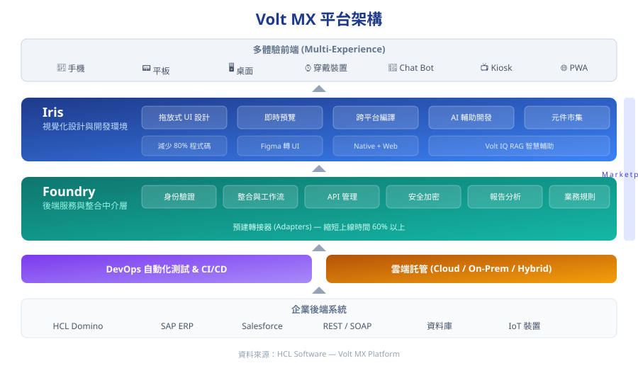
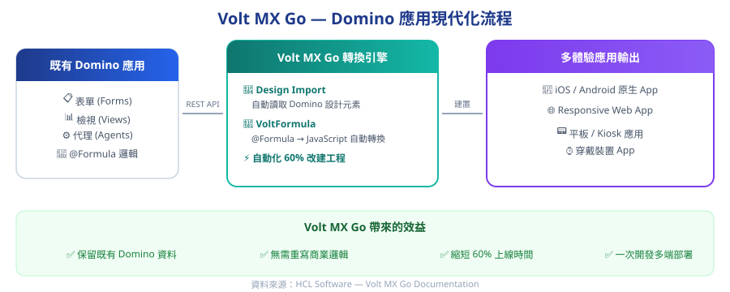

HCL Volt MX — 企業級低程式碼開發平台
一次開發、多端部署，結合 AI 輔助與原生 Domino 整合，用最低成本將企業應用擴展為多體驗應用。
為什麼選擇 Volt MX？
HCL Volt MX 是一個為專業開發者與公民開發者 (Citizen Developer)打造的企業級低程式碼平台。不同於一般低程式碼工具的彈性限制，Volt MX 以開放架構為基礎，提供從前端 UI 到後端整合的完整開發能力，同時保有企業級的安全性與擴展性。
- •一次開發，多端部署：從 iOS、Android 原生 App，到 Responsive Web、平板、穿戴裝置甚至 Kiosk，只需撰寫一次程式碼即可部署到所有平台。
- •AI 輔助開發 (Volt IQ)：內建 RAG 增強的 AI 開發助手，可將 Figma 設計稿在數秒內轉為可運行的 UI，並提供上下文感知的智慧開發建議，加速開發效率超過 60%。
- •程式碼減少 80%：透過拖放式視覺化設計、預建元件與範例應用，大幅減少手工編碼量。
- •彈性部署模式：支援雲端、地端 (On-Premises) 及混合部署，滿足不同企業的資安與合規需求。
平台架構：Iris + Foundry 雙引擎
Volt MX 平台由兩大核心元件組成，搭配 Marketplace 元件市集，構成完整的企業應用開發生態。

Volt MX 平台架構 — 從多體驗前端到企業後端系統的完整堆疊
design_servicesIris — 視覺化設計與開發環境
Iris 是 Volt MX 的前端開發 IDE，提供拖放式 UI 設計、即時跨平台預覽，以及 AI 驅動的 Volt IQ 智慧輔助。開發者可利用預建元件與範本快速組裝應用，並一鍵編譯為 Native App 或 Web App。
hubFoundry — 後端服務與整合中介層
Foundry 負責處理應用的後端邏輯，內建身份驗證、API 管理、工作流自動化、業務規則引擎與分析報表等功能。透過預建轉接器 (Adapters)，可輕鬆串接 HCL Domino、SAP、Salesforce 及各種 REST/SOAP 服務。
// FOUNDRY_BENEFITFoundry 的中介層設計讓後端變更不影響前端：當後端邏輯修改時，只需更新中介層的服務定義，無需重新發佈 App 或中斷使用者體驗。
Volt MX Go — Domino 應用現代化的最佳路徑
對於已投入多年 HCL Notes / Domino 的企業，Volt MX Go 提供了一條不需要砍掉重練的現代化路徑。它透過 Domino REST API 與專屬的 Domino Adapter，將既有的 Notes 應用轉換為多體驗應用程式。

Volt MX Go — 從既有 Domino 應用到多體驗輸出的現代化流程
cloud_downloadDesign Import — 自動匯入設計元素
Design Import 功能透過 Domino REST API 讀取既有應用的設計元素，包括表單 (Forms)、檢視 (Views) 與代理 (Agents)，自動在 Iris 中建立對應的表單與檢視，並綁定到 Foundry 的 Domino Adapter 進行 CRUD 操作。
sync_altVoltFormula — @Formula 自動轉 JavaScript
內建 VoltFormula 引擎，可將 Notes 應用中的 @Formula 語言自動轉換為對等的 JavaScript 程式碼。既有商業邏輯可直接重用，無需費時重寫，同時可用現代化的 JavaScript 擴展功能。
整體效益
- •自動化 60% 改建工程：Design Import + VoltFormula 大幅減少手動遷移的工作量。
- •保留既有資料與邏輯：Domino 資料庫與商業流程繼續運作，不需要資料搬遷。
- •擴展使用者觸及面：將原本僅限 Notes Client 的應用擴展到手機、平板與 Web。
- •降低開發門檻：團隊可使用 JavaScript 進行開發，不再侷限於 LotusScript / @Formula 技能。
企業級安全性
Volt MX 將安全性內建於平台之中，而非事後加掛，提供從裝置端到後端的全程保護：
- •FIPS 140-2 Level 1 合規的加密函式庫，搭配白盒密碼學 (White-Box Cryptography) 保護裝置端金鑰
- •支援多因素驗證 (MFA)、生物辨識、單一登入 (SSO) 及企業身份驗證整合
- •角色型存取控制 (RBAC) 與治理工具，精細管理使用者權限
- •全程 TLS/SSL 加密通訊，防範中間人攻擊 (MITM) 及 OWASP Top 10 弱點
- •通過 PCI DSS 認證及 SSAE 16 SOC 2 Type 2 合規稽核
三平台協同架構
先宏不只提供單一產品，而是透過 Volt MX + X-Pert AI + Xpower BPM 三大平台的協同整合，為客戶打造完整的企業數位化方案。
| 平台 | 角色定位 | 價值 |
|---|---|---|
| Volt MX | 多體驗前端 | 一次開發，多端部署（Web / iOS / Android），原生 Domino 整合 |
| X-Pert AI | AI 智慧引擎 | 企業知識問答、文件智慧搜尋、RAG 知識助理，為應用注入 AI 能力 |
| Xpower BPM | 流程自動化 | 企業簽核、表單流程、工作流引擎，串接既有 Notes 流程 |
透過這三大平台的搭配，企業可以在保留既有 Domino 資產的基礎上，同時獲得現代化的多裝置前端、AI 智慧能力與流程自動化引擎。
與傳統開發框架的差異
相較於使用 React JS 等前端框架從零建置，Volt MX 提供了從前端到後端的完整平台，讓開發團隊可以專注在商業邏輯而非基礎架構。
| 比較項目 | Volt MX | 傳統前端框架 (如 React JS) |
|---|---|---|
| 後端整合 | 內建 Foundry 中介層，預建轉接器直接串接 Domino、SAP 等系統 | 需自行建置後端架構與 API 串接 |
| 跨平台能力 | 一次開發同時產出 Native App + Web App | 需額外搭配 React Native 或分別開發 |
| 安全機制 | 企業級加密、MFA、RBAC 全部內建 | 需自行整合第三方安全元件 |
| 維運管理 | 平台託管，內建監控與分析報表 | 需自行管理基礎設施與監控工具 |
| Domino 整合 | Volt MX Go 原生支援，自動化 60% 遷移工作 | 無原生支援，需從頭開發介接 |
想了解如何將您的
Domino
應用現代化？
先宏資訊為 HCL 授權經銷商，提供 Volt MX 授權與導入諮詢一站式服務。